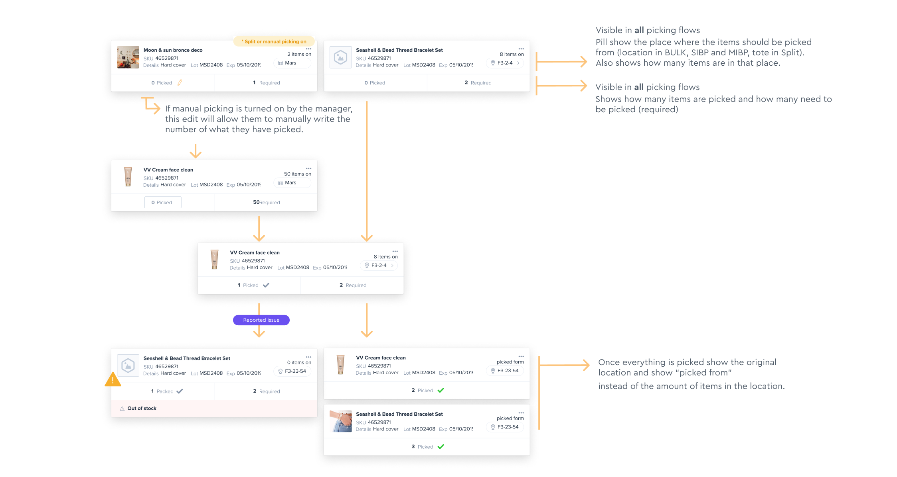
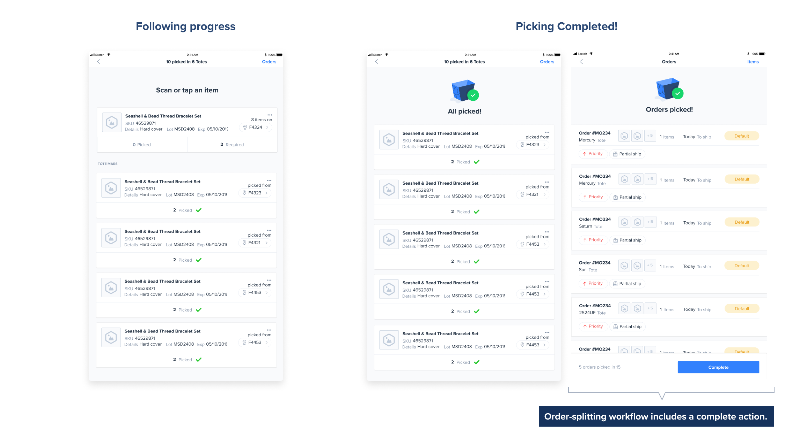
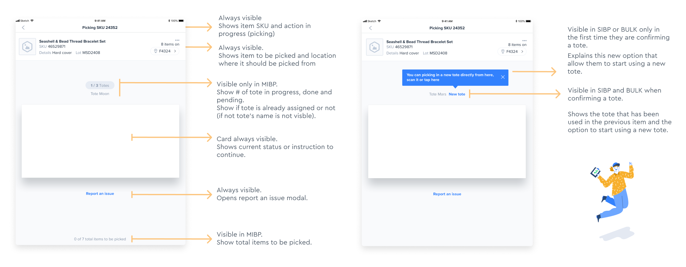
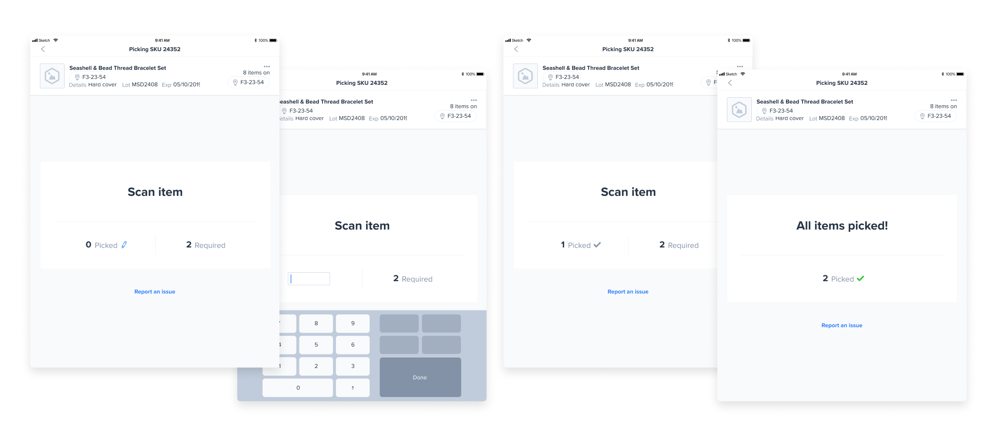
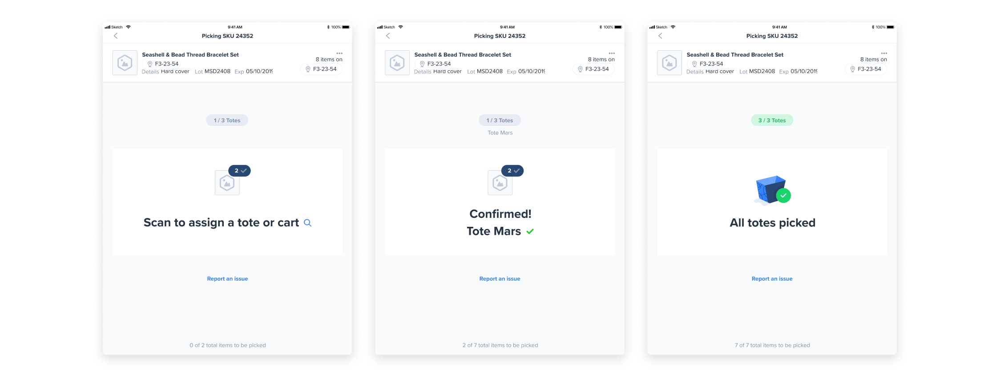

Throughout my career, I have demonstrated an ability to collaborate effectively with diverse stakeholders, including project managers, engineers, data scientists, and fellow designers.
I thrive in environments that grant autonomy and encourage taking ownership of one's work. I am committed to taking full responsibility for every aspect of the design process.
I focus on understanding the needs of users and businesses to find ways to improve digital products. I analyze users' workflows, metrics, surveys, and current solutions in the market. I also perform brainstorming sessions and usability tests.
I like to wear multiple hats & take various responsibilities: conducting user research, brainstorming solutions, prototyping and iterating based on feedback.


NYC 2020
The biggest challenge in this project was to find a flexible flow that would consistently support all the existing picking flows within a warehouse, in addition to solving multiple needs, such as:

The item cards were tailored to accommodate various flows and provide the necessary information at each stage of the process. In the following image, you can see the different states of the card as the user progresses through the flow:
 The picking page includes a card that guides users through their next steps, whether it's selecting a specific number of items or assigning a tote (containers used to organize orders).
At the top, users will find details about the item to be picked, including its location and the expected quantity.
Additionally, users will find other available actions, such as reporting errors if needed. Each action also offers a manual option for situations where a functional scanner is unavailable.
This is how the state of the card changes through the flow:

These are a few examples of possible states of the page and card
 The initial image depicts the error reporting page, where users encounter a preview of the item along with a list of error types. After selecting the error type, users are prompted to complete a form with necessary information for submission to the manager. Additionally, the system implements adjustments to prevent future errors, such as temporarily reducing the item quantity to prevent wasted time for other workers.
The second image illustrates situations where totes need to be set aside due to errors, such as lack of stock of an item preventing order completion.
In the third image, a modal window is displayed for manual tote assignment, along with a page where users can view all pending orders for picking and have the option to delete individual ones.


ARG 2023
Forta is a network and a community of leading security experts contributing to detect scams and threats.
They continuously enhance their detection capabilities with machine learning, ensuring heightened efficiency and agility. Incentivizing community participation, they offer rewards to maintain code quality at its zenith. The integrity of their internal economy is upheld through the utilization of the FORT token.
Forta had no subscription plans and users could subscribe to any bot and integrate unlimitedly with their own bots. The idea was to offer different plans and prices depending on the user's needs and the use of the software.
To support this, we needed to offer 3 different plans: General Data, Special Data and Bot Execution.
The bot execution plan was intended for developers and this plan will also have the option to choose how many units they will need to use.
The special data plan will have two types of feeds and the user should be able to choose one or both.
Users can choose as many plans as they need and upgrade at any time.
The first step was to brainstorm different layouts and also evaluate the ideal flow.

Although it was recommended from a usability point of view that users can purchase several plans at the same time, due to technical difficulties the first version will only support purchasing one plan at a time, and future iterations will be planned to include the purchase of multiple plans.

User’s profile could be empty (with no plan or history) or filled with data.
When viewing a bot execution plan, they should see how many units they have available and how many they already have in use.
In addition, feedback on the status of the plan was included with alerts to avoid problems such as the automatic cancellation of a plan due to lack of payment (when the user would have wanted to prevent it).


NYC 2022
Let me give you the lowdown on Lev Marketplace!
Our main aim with Lev Marketplace is to connect commercial real estate investors with the perfect lenders for their needs. Our ultimate goal? Ensuring that our clients not only secure more deals but also close them faster and with better terms compared to their competitors.
How do we achieve this? By empowering our clients to analyze lenders based on various deal features, seamlessly request quotes, and confidently identify the strengths and weaknesses of each offer. With Lev Marketplace, closing a competitive deal is no longer a shot in the dark‚Äîit's a sure thing! üè¢üíº
Now, let's dive into the nitty-gritty details of our project!
Our primary focus was to ensure seamless and transparent communication between brokers and borrowers within the platform. They collaborate on a range of tasks, including document requests and information sharing from the borrower.
We took special care to customize document visibility, recognizing the sensitivity of financial information. With this in mind, brokers, borrowers, and lenders each have their dedicated document tab on the task dashboard. This setup allows for easy access to all shared documents, complete with a specialized search engine to quickly find what they need‚Äîall while keeping within the context of the task at hand. üìÑüîç


Let's zoom in on another key aspect of our project:
Both brokers and borrowers will have clear visibility into their own pending tasks, as well as those of others. We've made sure to highlight any blocking tasks that may require immediate attention, ensuring smooth progress.
Tasks are neatly organized by stage, providing users with a clear overview of their position in the process and what steps come next. This streamlined approach makes it effortless to track progress and stay on top of things every step of the way. üöÄüìù
In order to keep borrowers informed and on track with their transactions, we introduced a dynamic feed where they can stay updated with the latest developments on their deals. This feed provides real-time insights into the status of their transactions, ensuring borrowers are always in the loop and on schedule. üì∞üîÑ

We meticulously crafted the structure of our feed cards to be both versatile and intuitive, accommodating various types of content seamlessly. Each card is designed with distinct colors and icons, ensuring easy recognition—users can quickly spot new terms or updates at a glance.
Moreover, we've tailored the content of each card to meet specific needs. Some cards are actionable, prompting users to take immediate steps, while others provide essential information without requiring further action. This thoughtful approach enhances user engagement and efficiency within the platform. üÉèüé®üìã
Identifying the perfect lender for our borrowers hinges on our thorough lender analysis. This analysis provides invaluable insights into how lenders operate their business and the types of deals they prefer.
By understanding these preferences, we can effectively match lenders with the most suitable deals, ensuring successful partnerships for all parties involved.

NYC 2023
I worked with Fennel as a freelancer, and they already had a working app in the Apple Store when they reached me to improve their app.
I started interviewing their users and tested their app. The open conversation provided me with general information and feedback, allowing me to detect which moments users remembered as most frustrating and context about when they used the app and why.
Then, the team had specific flows that they feared were the weakest or most relevant at a business level, we focused on testing these with specific tasks.
This allowed me to get to know different types of users and what type of use they gave or expected to give to the app, how it failed them, and how it helped them as investors.
With the results, I wrote a UX report, including priority criteria according to how blocking the issue was and a chapter with recommendations. After the team's review, several projects followed, in which we modified different parts of the experience.

Although the onboarding process was not tested, some users shared some of their experiences while in this process:
To improve the onboarding experience the following changes were made:
Also:


Several issues were discovered, some of them were:

I found several issues to address, some of them were:


The performance graphic was redesigned to fix the following issues: